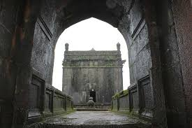
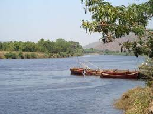
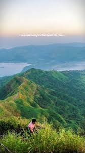
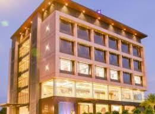
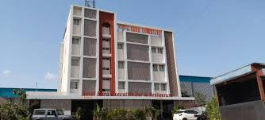

Khed is a picturesque town in Ratnagiri district of Maharashtra, surrounded by rivers, hills, and rich Konkan greenery. It serves as an important gateway to many coastal tourist destinations.

A peaceful temple admired for its traditional Konkan architecture.

A scenic river flowing near Khed, ideal for relaxing nature views.

Rolling green hills perfect for short drives and monsoon landscapes.

rating: 4.3 | Comfortable stay with modern amenities.

rating: 4.1 | Budget-friendly hotel with scenic surroundings.